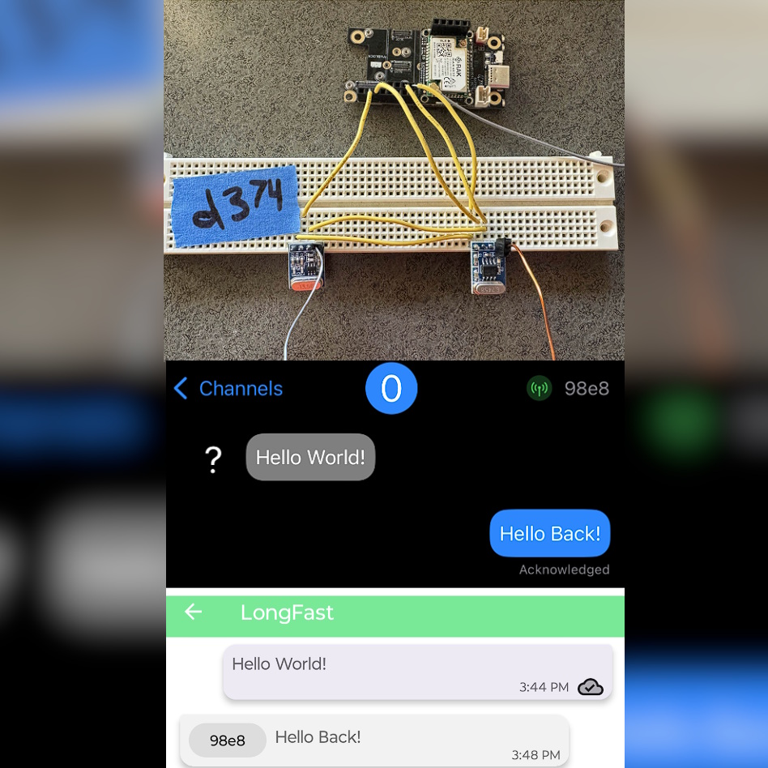

WIP: Smart Game Table
Compact, budget FTIR touch screen gaming table setup with rear projection imaging. Yes, it can run DOOM.
Key skills: FTIR, OpenCV, Human-Computer Interaction / Human-Centric Systems (HCI), Localization
Hello! I am Daniel Calco, a recent graduate from the University of Michigan! I'm a big fan of software, hardware, software for hardware, and...well...I think you get the point (ф_ф*). I hold a Master's in Computer Science Engineering, and a Bachelor's in Computer Engineering.
In my professional life, I have a passion for embedded systems and computer engineering projects. I enjoy working on projects that have a physical component - whether that's prototyping and working on human-centric systems, or reading datasheets and taking scope observations. For all that and more, I'm your guy! Feel free to browse my resume below, or keep scrolling for visual examples.
In my personal life, I take things a bit slower. I'm a big fan of night drives, finding the perfect (educational, of course) YouTube video for my meal, and raiding thrift shops for usable e-waste! In the future, I think I'd like to get into hiking. Currently working on my treadmill endurance.
(ask me about some of my thoughts on the state of "disposable" electronics...)
Below is an overview of the various projects I've worked on throughout the years. Feel free to browse, some even have videos!
Compact, budget FTIR touch screen gaming table setup with rear projection imaging. Yes, it can run DOOM.
Key skills: FTIR, OpenCV, Human-Computer Interaction / Human-Centric Systems (HCI), Localization

Recreation of Phillips' Ambilight TV. Television set echoes border colors onto LEDs mounted on back. Creates some nifty visual effects.
Key skills: Addressable LEDs, SPI, UART, Raspberry Pi & PiCam, STM32/CubeIDE, Interrupts, OpenCV, (oscillo)scopes

Smart glasses that translate and transcribe languages from one to another! Conveniently mounts to any pair of glasses.
Key skills: Cloud computing, ESP32, battery system design, PCB design & construction (SMT), 3D modeling, I2S/I2C, LDO

Firmware modification of LoRa project Meshtastic to instead support generic 433MHz ASK transcievers for transmissions.
Key skills: Open source project modification, Mesh networking, Git, RF, Amplitude Shift Keying (ASK), nRF52, JTAG Debugging
Volunteered on MNP's Electrical team for the wiring of a low-cost arm prosthesis meant for children with upper limb reductions.
Key skills: Large scale team project, PCB design, R&D
I am currently open to work. If you think my skillset matches what you're looking for, shoot me an email!